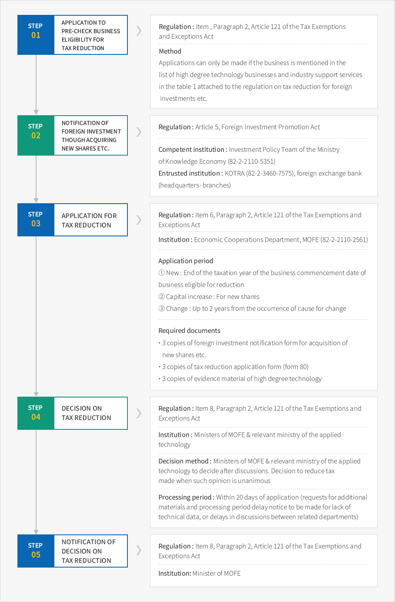

Tax Support
- Home
- Investment Guide
- Investment Incentives
- Tax Support
Tax Support for Foreign-Invested Companies
According to the Tax Exemptions and Exceptions Act, corporate and income tax on business income, dividends income, technology introduction considerations, earned income etc. have been reduced. Acquisition tax, registration tax, and property tax have been reduced for properties that have been acquired or held.
Corporate Tax Reduction
Reduction in corporate tax for foreign-invested companies applies to income from businesses qualifying for reductions under the Tax Exemptions and Exceptions Act. However, in the case that a Korean citizen (corporation) directly or indirectly holds 10% or more of the voting shares of a foreign corporation or foreign business that has invested in a business subject to tax reduction, the portion of the investment proportionate to the ratio of the said held shares will not be subject to tax reduction. That is to say, the tax reduction shall not apply to domestic round trips of domestic companies that have advanced overseas.
The intial day of reckoning tax reductions will be, whichever is sooner between, the tax year in which the first income was created, or the tax year in which the 5th year anniversary of the date of business commencement falls.
Date of Business Commencement
- In manufacturing, the first day of manufacturing goods at each manufacturing facility
- In mining, the first day of commencing collection/mining of minerals at each place of business
- In other businesses, the first day of supplying goods and/or services
In capital increases, the date marking the registration of capital increase shall be considered the date of commencing business in applying this regulation. For foreign acquisition of shares through capitalization of reserves, revaluation reserve etc. the period and rate of reduction shall be determined by cases of reductions for shares etc. that are the basis of such occurrence. If an application for tax reduction is made after increasing the capital less than 5 years after the decrease in paid-in capital, the reduction shall be determined only for the foreign investment ratio of the portion that is purely increased from before the capital decrease. However, in the case that a purely domestic company receives an investment from a foreigner through a capital increase and becomes a foreign-invested company shall be considered as a new foreign investment, and not as a case of capital increase as described above.
For mergers, if a foreign-invested company merges with a domestic company (excluding foreign-invested companies under the reduction period) during its reduction period, resulting in a decreased ratio of foreign investment in the merged corporation, the foreign investment ratio in the foreign-invested company prior to the merger shall apply.
For equally apportioned capitalization of revaluation reserves, that is, reserves which are not subject to new reductions, there shall be no changes to the reduction rate for the business year of capital increase, nor the next business year.
Tax Reduction Calculation
| Category | Calculation Method |
|---|---|
| Reduced Tax | Reduced tax = (calculated tax × tax reduction business assessment standards/total standard Reduced tax = (of assessment) × reduction rate |
| Reduction Rate |
|
Local Tax (acquisition/registration/property tax) Reduction
Property acquired or held by a foreign-invested company to do business subject to reduction will receive either a 100% or 50% reduction in acquisition, registration, and property taxes, or the items will be deducted from the standard of assessment.
The amount of foreign investment ratio (for tax amount subject to reduction) multiplied by the calculated tax amount shall be deducted 100% from acquisition, registration, and property taxes for 3-5 years following the commencement of business, and 50% for 2 years afterwards on properties that have been acquired following the commencement of business operations. However, acquisition, registration, and property taxes that have been already paid on properties that have been acquired following the commencement of business operations, but prior to becoming the subject of tax reduction, may not be refunded.
However, acquisition, registration, and property taxes on properties that have been acquired prior to the starting date of business shall be subject to 100% reduction on the tax reduction amount for properties that have been acquired following the date of the tax reduction decision. Property tax shall be subject to 100% reduction of the tax reduction amount for 3-5 years following the acquisition of the property, and 50% of the tax reduction amount for the next 2 years.
According to the regulations, the local tax reduction period may be extended up to 15 years, or the reduction or deduction rate could be increased.
Exemption of Customs Tariffs etc.
According to the Tax Exemptions and Exceptions Act, customs tariffs etc. shall be exempted for the following capital goods used directly in businesses subject to reduction in corporate tax or income tax, and are imported through foreign investment notification on acquisition of newly issued shares and etc.
- Capital goods imported as external or internal payment vehicles invested by foreign investors to foreign-invested companies
- Capital goods imported as investment objects by foreign investors
Exemptions of tariffs etc. shall only apply to capital goods that have completed the import notification under the Customs Act within 3 years after the day of the foreign investment notification. However, in the case that the import notification could not be completed in the said period due to unavoidable reasons such as delays in factory establishment approval etc. the exemption shall apply for up to 3 additional years with the approval of the Ministry of Finance and Economy.
All customs tariffs, special excise tax, and value-added tax shall be exempted for industry support services vital to strengthening the international competitiveness of domestic industries, businesses that require a high level of technology, or businesses operated by foreign-invested companies in stand-alone foreign investment areas under the Foreign Investment Promotion Act. Customs tariffs shall be exempted for foreign-invested companies in complex foreign investment areas, specific companies in free trade zones, foreign-invested companies in free economic zones, businesses operated by foreign-invested companies as a development operator of the Jeju investment promotion district etc.
Application Institution: Entry point customs office
Required documents
- Customs tariff exemption form
- Copy of capital goods import items account confirmation certificate
- Documentary evidence of investment in-kind or cash imported as capital goods
- Documentary evidence of business subject for reduction of corporate tax etc. (tax reduction certificate)
- Invoice, B/L or AWB, price declaration, packing list, certificate of origin etc.
Exceptions on Investment In-Kind: Investment In-Kind Completion Confirmation
When foreign investors make an investment in-kind, under the commercial law, the inspector should make an inspection report on the performance of the investment in-kind and submit the report to the court.
Notwithstanding such commercial law regulations, the investment in-kind completion confirmation certificate issued after the Customs Commissioner has checked the performance of investment in-kind and the type, quantity, price etc. of the object regarding capital goods invested in-kind by foreign investors, shall be considered as the inspector's inspection report according to the regulations of the Non-litigation Case Procedure Act.
Hence, when a foreign investor wishes to register capital at the district court after importing capital goods to be invested in-kind, he/she shall receive a confirmation of investment in-kind completion from the Customs Service officer dispatched to Invest KOREA.
※ Document to submit: 2 copies of investment in-kind completion confirmation application form
※ Document to submit: import report stamp
※ Document to submit: import report stamp
Tax Support for Dividends
Dividends received by foreign investors from foreign-invested corporations operating tax reduction businesses are subject to tax reductions in the same rate as the portion of the amount of income of the tax reduction business, based on the dividend income during the reduction period.
The initial day of reckoning for dividends from capital increase from new investments and cash, articles, or dividends is the same as the initial day of reckoning for corporate tax. During the period of 100% exemption of corporate tax, the dividend income tax is 100% exempted, and during the period of 50% reduction for corporate tax, the dividend income tax is reduced by 50%. However, dividends that are capital from a capital increase through capitalization of revenue reserves or revaluation reserves shall be applied with the period and rate of reduction that are applied to the original shares that are the source of the dividends. That is to say, 100% for 5 years and 50% for 2 years shall not be renewed.
Shares acquired by foreign investors from Korean national shareholders of foreign-invested companies or shares of domestic corporations shall not be subject to tax reduction since it is recognized as acquisition of existing shares. However, when foreigners or foreign corporations acquire shares held by a foreigner or foreign corporation, the initial period and rate of reductions shall be maintained.
Tax Reduction Application Procedures
Tax Reduction Application
1) Prior Checking on Businesses Eligible for Tax Reductions
- According to the Foreign Investment Promotion Act, foreign investors and foreign-invested companies may request the Ministry of Finance and Economy to check on the eligibility for tax reductions prior to the notification of foreign investment. The Ministry of Finance and Economy determines and notifies the investor of eligibility within 20 days of the application.
- Simply checking whether or not there is high technology does not make the validity of the decision to reduce taxes recognized. Therefore, a separate tax reduction application has to be made after notifying the foreign investment.
2) Tax Reduction Application
- The tax reduction application of foreign-invested companies shall be made to the Ministry of Finance and Economy. However, the Ministry commissions the supervisory authority to authorize the receipt of tax reduction application and tax reduction change application for foreign investments in free trade zones and decisions, confirmation, notification regarding reduction, change in reduction details, and reduction eligibility.
- The application deadline for new corporations is the end of the taxation year which the business commencement day of the foreign investment company belongs to for new corporations. For capital increase corporations, the deadline will be determined according to the new investment tax reduction regulations of the Tax Exemptions and Exceptions Act (Paragraph 2, Article 121 & Paragraph 3, Article 121). However, if foreign-invested companies increase capital within the range of the notified amount of foreign investment confirmed at the time of determining tax reduction within 3 years of the initial tax reduction notice day after the foreign investment notification, the increased portion shall receive tax reduction without having to apply for reductions (applied to the initial portion of capital increase since January 1st, 2006). Also, when changing the business subject to tax reduction, and wishing to receive reduction to the changed business, it shall be done within 2 years after the date of the cause for change (reductions will only apply to the remaining period in such cases). If reduction applications are made and accepted for tax reduction after the tax reduction application deadline has passed, reductions will be granted to the taxation year of the reduction application date. However, tax already paid shall not be refunded.
Tax Reduction Change Application
Tax reduction change application refers to an application on changes in the business accepted for tax reduction (business eligible for tax reduction). If changing the details of the foreign investment notification, such as the foreign investment amount etc., and if such changes are made, the initial tax reduction decision continues to have effect, according to the details of the application to change foreign investments or foreign-invested company registration. Simple changes in the corporate name or the location are not subject to tax reduction change application, and hence shall be notified to the district tax office or the local government.
Required documents
- Description of concerned technologies: Catalogues and other reference materials on products and services produced or provided through the technology
- Documents stating the scope of usage of products and services produced or provided through the technology
- Production methods and process figure (only for the production technology)
- The schedule shall include every step of the process, and the steps requiring high degree of technology shall be marked.
- Individual steps of the process carried out domestically shall be marked.
- Evidence of economic effects or technological performance
- Comparison in performance, quality, or cost reduction between 'products and services produced or provided through the technology' and 'products and services of the same or similar type'
- Following materials proving the high degree of technology
- Certificates, test results, evaluations etc. from foreign governments and other authorized institutions on the products and services produced or provided through the technology
- Industrial property rights materials such as patent etc. regarding the technology (or services)
- Materials (R&D institution, development participants, development costs and period etc.) on the development of the technology (or services)
- Investments into a third party country and past cases of providing to a third party country to utilize the technology, or a similar technology (or services)
- Other documentary evidence of the high degree of technology
- Copy of foreign investment notification stamp
- Copy of official document on tax reduction
3) Decision and Notification of Tax Reduction
- When there is application for tax reduction, or for changes in details of tax reduction, the Ministry of Finance and Economy shall review whether the application is eligible for tax reduction, and determines and notifies the applicant of the eligibility of reduction and any changes to details of reduction within 20 days of the application. However, in unavoidable cases when it would take a long time to determine the eligibility of reduction and changes to the details of reduction, the processing period can be increased up to 20 days. In such cases, the cause and time to process is notified to the applicant.
- When a decision has been made on a tax reduction or change to the details of tax reduction, the Ministry of Finance and Economy notifies the decision to the Commissioners of both the National Tax Service and Korea Customs Service, as well as the head of the local government of the district of the concerned factory facilities.
- When non-eligibility for reduction decision is made for industry support services and high-tech businesses, advanced notice shall be issued within 20 days of the application. Upon the receipt of the advanced notice of the decision, the recipient may attach materials and make written request for the review on the appropriateness of the notice. The Ministry of Finance and Economy shall determine and notify the applicant of eligibility for reduction within 20 days of receiving the application.
Foreign-Invested Company Tax Reduction Application Procedures


- Application to pre-check business eligibility for tax reduction - Regulation : Item , Paragraph 2, Article 121 of the Tax Exemptions and Exceptions Act - Method : Applications can only be made if the business is mentioned in the list of high degree technology businesses and industry support services in the table 1 attached to the regulation on tax reduction for foreign investments etc.
- Notification of foreign investment though acquiring new shares etc. - Regulation : Article 5, Foreign Investment Promotion Act - Competent institution : Investment Policy Team of the Ministry of Knowledge Economy (82-2-2110-5351) - Entrusted institution : KOTRA (82-2-3460-7575), foreign exchange bank (headquarters·branches)
- Application for tax reduction
- Regulation : Item 6, Paragraph 2, Article 121 of the Tax Exemptions and Exceptions Act
- Institution : Economic Cooperations Department, MOFE (82-2-2110-2561)
- Application period
- ① New: End of the taxation year of the business commencement date of business eligible for reduction
- ② Capital increase: For new shares
- ③ Change: Up to 2 years from the occurrence of cause for change
- 3 copies of foreign investment notification form for acquisition of new shares etc.
- 3 copies of tax reduction application form (form 80)
- 3 copies of evidence material of high degree technology
- Decision on tax reduction - Regulation : Item 8, Paragraph 2, Article 121 of the Tax Exemptions and Exceptions Act - Institution : Ministers of MOFE & relevant ministry of the applied technology - Decision method : Ministers of MOFE & relevant ministry of the applied technology to decide after discussions. Decision to reduce tax made when such opinion is unanimous - Processing period : Within 20 days of application (requests for additional materials and processing period delay notice to be made for lack of technical data, or delays in discussions between related departments)
- Notification of decision on tax reduction - Regulation : Item 8, Paragraph 2, Article 121 of the Tax Exemptions and Exceptions Act - Institution : Minister of MOFE

Supplementary Collection of Reduced Tax
Tax reduction policies stipulated in the Tax Exemptions and Exceptions Act are only granted during the set period of time only with certain reduction conditions met. If such reduction conditions are not fulfilled, the reduced tax shalll be collected as stated in the table below:
Reduced Tax Collection
| Collection Cause | Taxes | Range of Collection |
|---|---|---|
| Registration cancellation or business closure | corporation tax, income tax, acquisition tax, registration tax, property tax, integrated land tax, customs tariff, special excise tax, value added tax | Retroactive to reduced tax since 5 years (3 years for customs tariff) from the date of registration cancellation·closure |
| Not eligible for reduction | corporation tax, income tax, customs tariff, etc. | Retroactive to reduced tax since 5 years from the day of non-eligibility for reduction |
| Non-execution of notified matters, or correction orders | corporation tax, income tax, customs tariff, etc. | Retroactive to reduced tax since 5 years from the deadline of the correction order |
| Assignment of shares/equity held by foreign investors to a citizen (corporation) of the Republic of Korea |
corporation tax, income tax | Reduced tax × (1-number of passed months/36) × assigned share ratio, if assigning within 3 years from the first day of the taxation year |
| customs tariff, special excise tax, value added tax | Reduced tax × (1-number of passed months/36) × assigned share ratio, if assigning within 3 years from the date of exemption | |
| acquisition, registration, property, integrated land tax | Retroactive to reduced tax × assigned share ratio since 5 years from the date of assignment | |
| When investment objects are used or disposed of for purposes other than notified purposes | customs tariff, special excise tax, value added tax | Reduced tax for capital goods used or disposed of for purposes other than notified purposes within 5 years (3 for customs tariff) from the date of import notification receipt |
| When the ratio of foreign investors' shares or equity does not reach the ratio at the time of reduction | acquisition tax, registration tax, property tax, integrated land tax | Retroactive to reduced tax x insufficient ratio since 5 years from the date of insufficiency |
However, the collection of tax may be exempted for the following cases:
- When the registration for a foreign-invested company is cancelled due to the foreign-invested dissolution through mergers
- When capital goods that have been exempted of customs tariff etc. in their imports are used or disposed of for other purposes than their original purposes with the approval of the Ministry of Finance and Economy, because they are unable to be used for their original purposes due to natural disasters and other force majeure, or due to depreciation, technological advances and other changes in economic circumstances
- When transferring shares etc. to a citizen or corporation of the Republic of Korea to open the foreign-invested company to the public under the Securities Trade Act
- Foreign investors who have invested in industry support services or high-tech businesses assign their held shares to a citizen or corporation of the Republic of Korea, and the Ministry of Finance and Economy confirms that there is no difficulty in self-producing domestically, the products or services produced or provided by the concerned industry support services or high degree technologies
- Assigning shares etc. held by a foreign investor to a citizen or corporation of the Republic of Korea according to other laws or government policies, with confirmation from the Ministry of Finance and Economy
※ Additional Attachment: Tax Reduction for Foreign-Invested Companies
Other Tax Supports
Tax Exemption for Technology Introduction Compensation
When introducing a high technology which is key to strengthening the international competitiveness of domestic industries, the corporate tax and income tax on the compensations that the foreigner will receive for providing the technology shall be exempted for 5 years from the first agreed date of the payment for compensation. This applies not only to foreign-invested companies, but also to purely domestic companies, as well.
The Ministry of Finance and Economy and the Foreign Investment Deliberate Council shall go under deliberation and notify the range of technologies (high degree technology products and their technologies) eligible for tax reduction. The standards for such technologies are as follows:
- Technology that has a profound economic or technological impact on the national economy, and is essential to improving the industrial structure and strengthening industrial competitiveness
- Technology that has been introduced to the country (date of technology introduction contract notification) less than 3 years ago, or technologies that have been introduced over 3 years ago, but are economically and technologically superior to already introduced technologies
- Technology with most of its processes carried out domestically
In order to receive tax exemption for compensation for technology introduction, the application for exemption shall be made to the Minister of the competent Ministry before the sooner of the two: 1 year after the contract date of the technology introduction contract date, or the first payment date of compensations for technology introduction. If exemption applications are made and accepted for tax exemption after the tax exemption application deadline has passed, exemptions shall be granted to the taxation year of the exemption application date and the remaining exemption period afterwards. However, tax already paid shall not be refunded.
Comparison of Tax Reduction for Foreign-Invested Companies & Technology Introduction Compensations
| Category | Tax Reduction for Foreign Invested Companies |
Tax Reduction for Technology Introduction Compensations |
|---|---|---|
| Beneficiary | Foreign-invested companies, foreign investors |
High degree technology provider |
| Reduced Income | Corporation tax, income tax for foreign-invested companies, and dividend income tax for investors |
Compensation for high degree technologies (usage fees, royalties etc.) |
| Reduction Period | 100% for 5 years, 50% for 2 years | 100% for 5 years |
| Initial Day of Reckoning | Taxation year of income generation (within 5 years) | First payment date of compensations |
| Related Legal Provisions | Paragraph 2, Article 121, Tax Exemptions and Exceptions Act | Articles 25 & 26, Foreign Investment Promotion Act, Paragraph 6, Article 121, Tax Exemptions and Exceptions Act |
| Technology Standards | International competitiveness, high degree technology, less than 3 years expired etc. | |
| Application Deadline | Apply to the Minister of MOFE by the end of the taxation year of the business commencement date (prior checking policy) | 1 year after the contract date of the technology introduction contract date, or the first payment date of compensations for technology introduction. Application for exemption made to the Minister of the competent Ministry before whichever is sooner between 1 year after the contract date of the technology introduction contract date, or the first payment date of compensations for technology introduction |
| Processing Period | Within 20 days of application | Within 20 days of application |
| Application Form | Tax reduction application form(form 80) | Application form for exemption of corporation tax etc. for technology introduction compensations (form 84) |
| Eligibility | Table 1 attached to the regulation on tax reduction for foreign investments etc. | |
Tax Support for Foreign Engineers
- As for the income provided to specific foreign engineers for providing service to natives in Korea, income tax shall be exempted for monthly earned income starting from the first day that the foreign engineers provide service domestically up to 5 years. But the above only applies to the starting date of the service prior to Dec. 31, 2009.
- Also, income tax can be exempted for the income paid to foreign engineers who provide service under technology introduction contracts under the Foreign Investment Promotion Act. But the eligibility of the exemption is for income earned up to the month where the day marking 5 years after the notification certificate on technology introduction contract was issued falls. The above only applies to cases in which the issuing day of the notification certificate is prior to Dec. 31, 2009.
| Category | Paragraph 1, Article 18, Tax Exemptions and Exceptions Act |
Paragraph 2, Article 18, Tax Exemptions and Exceptions Act |
|---|---|---|
| Beneficiary |
Foreign engineers providing labor to natives
|
Foreign engineers providing labor domestically to natives under a technology introduction contract that is eligible for tax reduction under the Foreign Investment Promotion Act |
| Reduced Income |
※ Not reduced for any other than earned incom
|
|
| Reduction Period | Monthly earned income starting from the first day that the foreign engineers provide labor domestically up to 5 years (prior to Dec. 31, 2009) | Income earned until the month including the day which falls 5 years after the notification certificate on technology introduction contract is issued (prior to Dec. 31, 2009) |
| Reduction Application | Application to the head of the withholding district tax office by the 10th of the following month after the day when labor is provided. | |
| Remarks |
|
|
Taxation Exceptions for Foreign Workers
- Foreign executive or employers may enjoy the taxation exceptions for foreign workers. The exceptions also apply to domestic branch workers of foreign corporations, but does not apply to day laborers. Foreign workers may choose whichever is more favorable from the 2 ways of taxation exceptions as follows.
- Income tax exemption for 30% of the total amount of salary received until 31 Dec. 2009 for work carried out domestically (other deduction items continue to apply)
- Apply a single tariff of 17% as income tax to the income received until Dec. 31, 2009 for work carried out domestically (regulations on income tax related tax exemption, education, reduction and tax credit etc. not applied).
- Foreign workers are subject to taxation exemption pay withholding tax by applying the withholding income tax table to the remaining amount of the monthly salary after deducting 30% from the total amount. At year-end tax adjustments, or determining composite income tax assessment standards, the taxpayer may choose whichever is more favorable from the above 2 methods. In the first case of a 30% tax exemption of salary, 30% of the total annual salary is deducted before deducting general deductions related to earned income, such as other tax exemptions, earned income deduction, personal deductions etc. after which the standard tax rate is applied to come up with the final amount of tax.